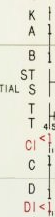
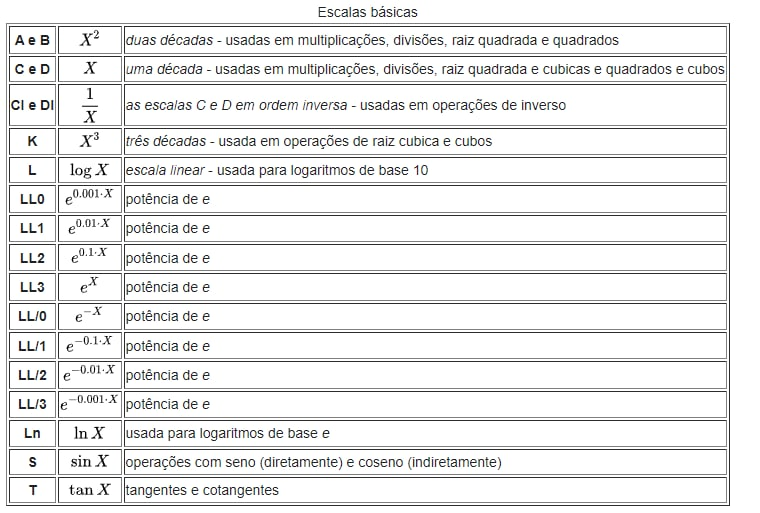

Régua de cálculo
Simulação de uma régua de cálculo Pickett N 3-T
História da régua de cálculo em vídeo
Como usar o simulador?
A régua de cálculo é composta por dois tipos de escalas: as fixas e as móveis, e em cada uma destas partes estão distribuídas as várias possíveis escalas. Além da parte fixa e da móvel, a régua tem ainda o cursor, que é uma janela móvel com uma linha fina, que permite que pontos em escalas não adjacentes sejam alinhados. No simulador, para mover essas partes da régua, basta arrastá-las com o mouse. Quanto às escalas, a seguinte parte as representa:
As possíveis escalas estão marcadas no início de cada reta e referenciam o tipo de operação que pode ser realizada com as mesmas.
Para a multiplicação, vemos, por exemplo, que qualquer número que esteja abaixo do 1 da escala C na escala D é o multiplicador, que automaticamente dirá qual é o valor que multiplica os que estão na escala C. Portanto, os valores na escala D são os valores já multiplicados.
Para a divisão, devemos subtrair os valores, então, por exemplo, para dividir 5 por 2, colocamos o 2 da escala C sobre o 5 da escala D e a posição do valor 1 na escala C dirá o resultado da divisão.
Breve história da régua de cálculo
Aproveitando-se das propriedades matemáticas da função logarítimica, a qual facilitou a tarefa de multiplicar valores, o padre e matemático inglês William Oughtred desenvolveu uma régua de cálculo no século 17 cuja base do funcionamento eram valores pré-calculados de vários logaritmos. A partir dela, foram criados diversos modelos que, mesmo depois da criação da calculadora eletrônica, foram muito utilizados.
Em sua forma mais básica, a régua de cálculo usa duas escalas logarítmicas para realizar multiplicações e divisões rápidas de números. Essas operações comuns podem ser demoradas e propensas a erros quando feitas em papel. Réguas de cálculo mais elaboradas podem realizar outros cálculos, como raízes quadradas, exponenciais, logaritmos e funções trigonométricas.